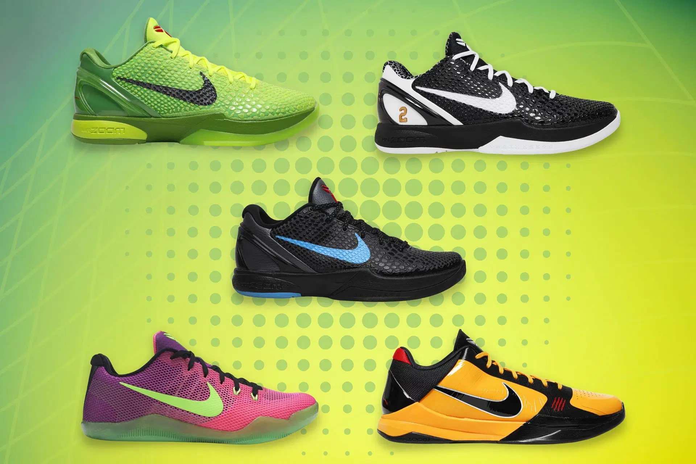

--- Kobe Bryant --- |
|
| Kobe Bryant ook wel de 'Black Mamba' genoemd was een legendarische Amerikaanse basketbalspeler, bekend om zijn indrukwekkende carrière in de NBA. Hij speelde 20 seizoenen voor de Los Angeles Lakers en wordt vaak beschouwd als een van de grootste basketbalspelers aller tijden. | |
| Hij was een 18-voudig NBA All-Star en werd geprezen voor zijn prestaties zowel op als buiten het veld. Na zijn pensioen in 2016 bleef Kobe actief in verschillende projecten, waaronder film en onderwijs. Tragisch genoeg overleed hij in 2020 bij een helikopterongeluk, wat een groot verlies betekende voor de sportwereld en zijn fans wereldwijd. | |
| Kobe Bryant heeft ook veel en zeer bekende schoenen gemaakt. In mijn mening de coolste basketschoenen ter wereld. Zijn meest bekende schoen is de 'Kobe 6 Grinch'. Die zie je ook linksboven in de foto. |  |